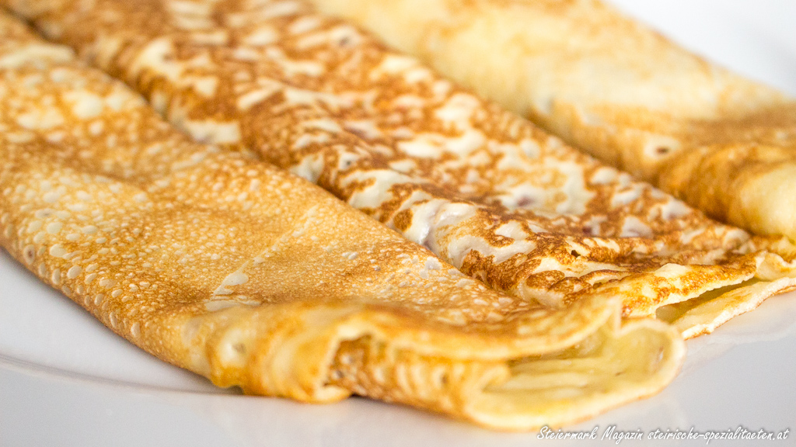

Palatschinken

Palatschinken nach Omas Art
Palatschinken sind kleine dünne Pfannkuchen, die typischerweise eine Füllung enthalten. Die Einzahl ist Palatschinke, doch im Wienerischen wird generell nur die Mehrzahl genutzt. Sie sind eine Spezialität der österreichischen und Wiener Küche mit der bekannten Variante der sogenannten Topfenpalatschinken.
Zutaten
- 120 g Mehl (glatt)
- 0.25 l Milch
- 1 Stk Ei
- 1 Prise Salz
- 1 EL Zucker
Zubereitung
- Für den Palatschinkenteig werden Mehl, Milch, Ei, Salz und Zucker in einer Schüssel mit dem Schneebesen oder dem Mixer gut verrührt, bis eine glatte, flüssige Teigmasse entsteht.
- Dann eine flachen Pfanne mit wenig Öl erhitzen. Mit einem Schöpfer so viel Teig hineingießen, dass der Boden bedeckt ist - Achtung: nicht zu viel Teig, da sonst die Palatschinke zu dick wird. Wenn es leicht angebräunt ist, die Palatschinke mit einem Pfannenwender umdrehen.
- Noch heiß mit Marmelade oder Fruchtmus füllen, eventuell mit Schokolade übergießen. Statt der Schokolade kann man sie auch mit Staubzucker bestreuen.
Tipps
- Um einen besonders lockeren Palatschinkenteig zu erhalten, kann man anstatt der vollen Menge Milch auch einen Schuss Mineralwasser hinzufügen.
- Zum Ausbraten eignet sich am besten ein neutrales Pflanzenöl. Dabei sollte für jede Palatschinken, die Pfanne mit ganz wenig frischem Öl, am besten mit einem Pinsel, bestrichen werden.
- Die Palatschinke kann gewendet werden, wenn beim Rütteln der Pfanne, sich auch der Teig bewegt.
- Anstelle des Zuckers kann auch Honig verwendet werden.